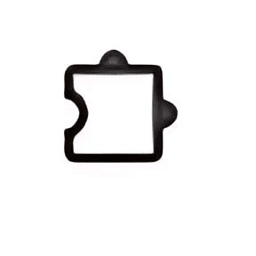
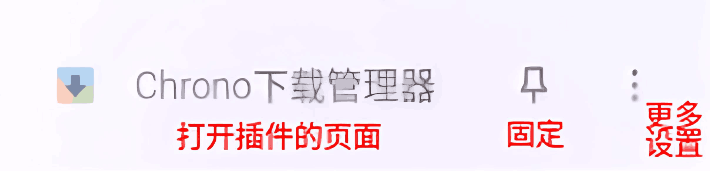

-
下载插件
由于某些原因，国内是无法直接访问谷歌应用商店的，所以肯定需要其他存储站。这里推荐使用 极简插件，它的插件都是谷歌商店上的，它有时会收录
Edge版本，有时候还会保留一些谷歌商店上已经下架的插件（他会有所提醒）。（不是广告）在极简插件上下载插件是一定要注意看它的最新版是否支持您的谷歌版本：
1. 首先如果该插件对 chrome 浏览器版本的要求有可能导致某些用户安装失败，它会在文中提醒，有时也会在文中贴出兼容旧版 chrome 浏览器拓展版本。 2. 如果你仍不放心，可以点击 `历史版本`（一般只有热门的拓展有），下载最新支持你的 chrome 浏览器的版本。如果您不知道您 chrome 浏览器的版本，可以在网址栏中输入
chrome://settings/help查看您 chrome 浏览器的版本。Google 官方于 5 月 30 日发布公告,宣布将从 6 月 3 日开始,逐步淘汰 Manifest V2 扩展程序标准,并推荐用户使用新的 Manifest V3 标准。
而 Manifest V3 标准需要的最低内核版本要求是 Chrome 124 及以上。
也就是说如果你是 chrome 浏览器，目前版本低于 Chrome 124，就有可能无法安装最新版本的插件。 -
安装插件
-
解压下载的压缩包。
-
在网址栏输入
chrome://extensions/打开插件管理界面，点击右上角打开开发者模式（如果你已经打开了就不用管了）。 -
将解压出的文件中的
.crx文件拖到窗口中（请确保页面位拓展程序管理页面），加载它。然后一直等到显示类似如图弹窗。
点击添加拓展程序以加载这个拓展程序。
如果有显示类似
程序包无效的提示，说明你的 chrome 浏览器版本可能过低，请更新你的 chrome 浏览器或者前去你下载插件的地方下载兼容旧版本的插件。 -
-
【可选】 配置（设置）拓展
一般的插件都会给插件些一个设置界面，但如果你想配置这个插件的权限或者它没有弹出设置界面，你试试以下步骤。
-
在网址栏输入
chrome://extensions/打开插件管理界面。 -
找到你要配置的插件，点击它左下角的
详情按钮，在这里你就可以配置它的权限了。而插件自己的设置页面一般在扩展程序选项（如图）里。

-
如果你在上面没有找到插件的设置界面，你可以点击浏览器菜单栏的左上角的插件按钮

，找到你要找的插件。 -
找到你要设置的插件：你可以点击它来打开它的页面（里面可能有一些设置）；点击中间的大头针可以将其固定在菜单栏上，以后只用点击菜单栏上的图表就可以打开它的页面；点击右边的三个点可以设置更多，具体的请自己研究，这里因为篇幅原因不赘述了。

-
这篇博客就写到这了，快去位你的 chrome 浏览器增添新功能吧，如果有不懂或者要补充的可以提出。